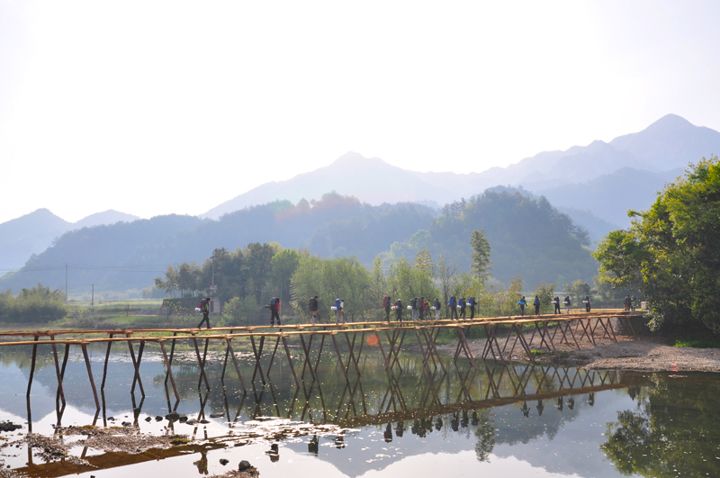

发信人: liyiren (liyiren), 信区: outdoor
标 题: [约伴]清明节4/4晚-4/6行走山脊龙须山
发信站: 饮水思源 (2014年03月25日01:29:31 星期二)
screen.width - 200){this.width = screen.width - 200}">
线路简介：
龙须山的风景秀丽，是领队们最钟情的线路。龙须山线路可以体验行走山脊的惊险与乐趣
，又可以在营地观赏落日，还能够在领队的带领下逃票龙川景区，是一次极具性价比的旅
行。如果你体力不错，如果想挑战自我，如果你走腻了徒步水线，不妨来龙须山感受一下
不一样的旅行。
线路强度：★★★
线路难度：★★★
风景指数：★★★★
趣味指数：★★★
出行时间：4月4日晚至4月6日
详细内容请点击公共主页日志
http://page.renren.com/601632842
或者关注微博@毕业旅行了么 了解
补充一下：非野协官方活动，由野协毕业校友召集，除了在校学生，也欢迎研究生及毕业校友参加
以下照片均为去年俱乐部龙须山线路所摄
 screen.width - 200){this.width = screen.width - 200}">
screen.width - 200){this.width = screen.width - 200}">
screen.width - 200){this.width = screen.width - 200}">
screen.width - 200){this.width = screen.width - 200}">

※ 修改:·liyiren 于 2014年03月25日01:30:52 修改本文·[FROM: 101.80.203.171]
※ 修改:·liyiren 于 2014年03月25日10:38:44 修改本文·[FROM: 206.113.192.12]
|